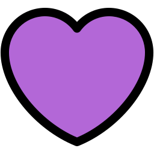

Entenda a Ansiedade
Um espaço seguro para entender, compartilhar e acolher
"Ansiedade tem solução. Entenda, compartilhe e cuide-se."
O que é a ansiedade?
A ansiedade é uma emoção natural que todas as pessoas sentem em determinados momentos da vida. Ela tem uma função importante: preparar o corpo e a mente para reagir a situações como desafios, perigos ou ameaças. Sentir ansiedade antes de uma prova, de uma entrevista de emprego ou de uma decisão importante, por exemplo, é normal e pode até nos impulsionar a agir.
No entanto, quando a ansiedade se torna excessiva, constante e começa a atrapalhar a vida cotidiana, dificultando o trabalho, os estudos, os relacionamentos e o bem-estar, ela pode evoluir para um transtorno de ansiedade.
Os transtornos de ansiedade são condições de saúde mental sérias, que abrem milhões de pessoas no mundo. Entre os principais tipos estão o Transtorno de Ansiedade Generalizada (TAG), Síndrome do Pânico, Fobias, Transtorno Obsessivo-Compulsivo (TOC) e Estresse Pós- Traumático (TEPT).
A ansiedade pode impactar a pessoa de diversas formas, e o processo não é único nem linear. Ela é uma condição que merece cuidado, acolhimento, e, muitas vezes, tratamento profissional. Se você acha que está lidando com ansiedade excessiva (ou conhece alguém em sofrimento), procure fazer Psicólogos, psiquiatras e grupos de apoio podem ajudar você a recuperar o equilíbrio e a qualidade de vida.
Se você reconhece alguns desses sentimentos, informações ou sinais de alerta, aqui é um espaço pensado para isso e para cada ajuda. Você não está sozinho(a).
Artigos em destaques


Depoimentos
